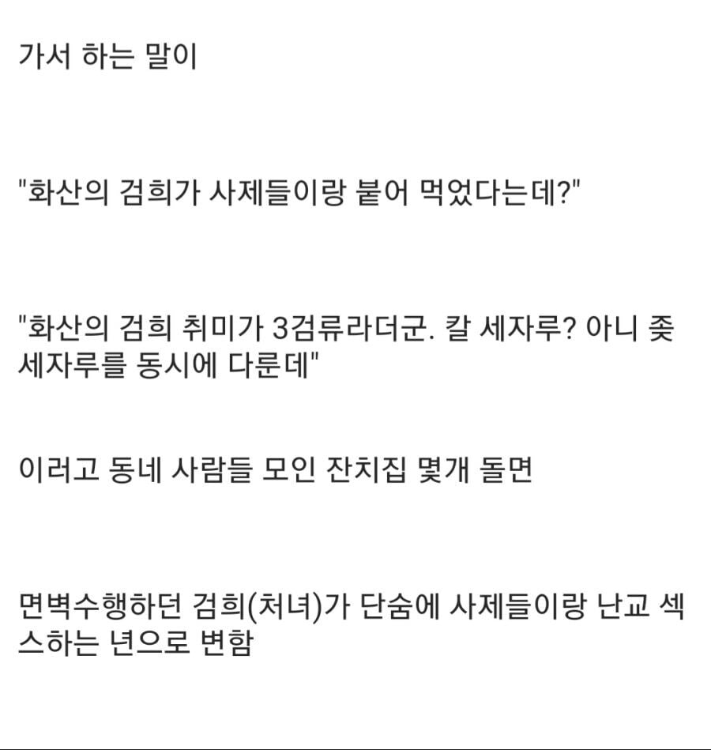
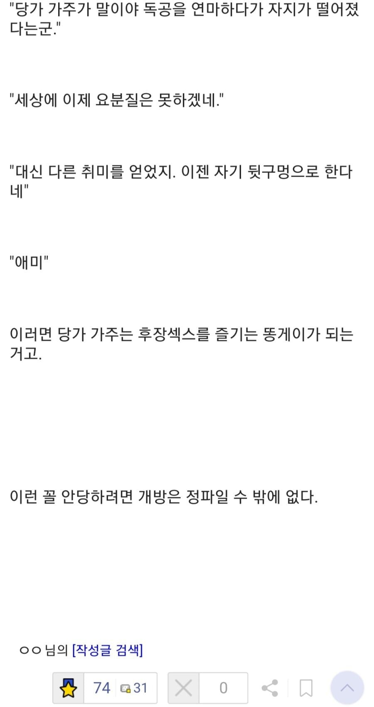

하오!
하오쓰!
히오스???
사실 사천당가의 만천화우는 개방껀데 양보한거부터 아량이 정파임
개방거지들이 무슨돈이 있어서
만개의 비를 내리게하는것이냐
라는 생각이 드는건 본인뿐인가요
무틀딱님들 등판좀여
꺼무위키발로는 김용 초기 소설에 처음 나왔다고 함. 침 사서 쐈대
만개의 때가 내리는거면 가능하지 않을까?
개방의 방주가 노독물이 사역하는 뱀 잡으려고 만든 기술이 만천화우임
김용땐 사천당가가 없었거든
그 뒤로 사천당가생기고 독, 암기 이미지 가져가면서 암기 던지는 개쩌는 필살기가 있다고? 그럼 이거 사천당가꺼임 으로 넘어감
만천화우 거품 귀신같이 알아채고 다른곳에 넘겼네 ㅋㅋㅋ
애미 ㅋㅋ
사파 이미지가 십창난 이유가 있었군
커뮤에 댓글부대 풀어서 여론조작 및 선동하는 애들 집합소라 이거네
사파놈들은 저런선동이 안먹힌다는말도 되겠군
엥? 존나 섹스하는데요?
나 사파할래
흑묘방의 방주가 어린남자아이를 좋아한다는구먼
떼잉 그놈 그럴줄 알았다
왜냐면 인생밑바닥놈들이기 때문
사파는 저게 일상인거지 ㅇㅇ
걔네는 팩트라서 선동과 날조가 안됨
뭐야 기레기였어?
검희는 삼류에요오오옷
소문이 무섭긴해 ㅋㅋ 이글보니까 정파일수밖에 없네
그러고보니 개방에는 여자가 없군
수틀리면 레카 끌어버린다 이거네
사파마교는 머 이미 이미지가 바닥이라 선동이 안 통하는건가
어흐 검희 조아
애미ㅋㅋ
저런 소문내면 개방하고 개방비슷한 거지들 다 모가지 떨어져 뒤짐
그러면 무림공적 되는거지
저래서 마교가 심심하면 십만 대산 총동원해서 쳐들어오는거임
심심하면 천마가 마공을 수련하다 부작용으로 TS되서 본녀는 천하제일인이지만 뒤는 삼류에욧!!! 하고 다닌다는
이런 썰 풀다가 그게 천마 귀에 까지 들어가면 사실적시 명예훼손 죄로 잡으러 오는 거임
하오문이 사파인 이유구만